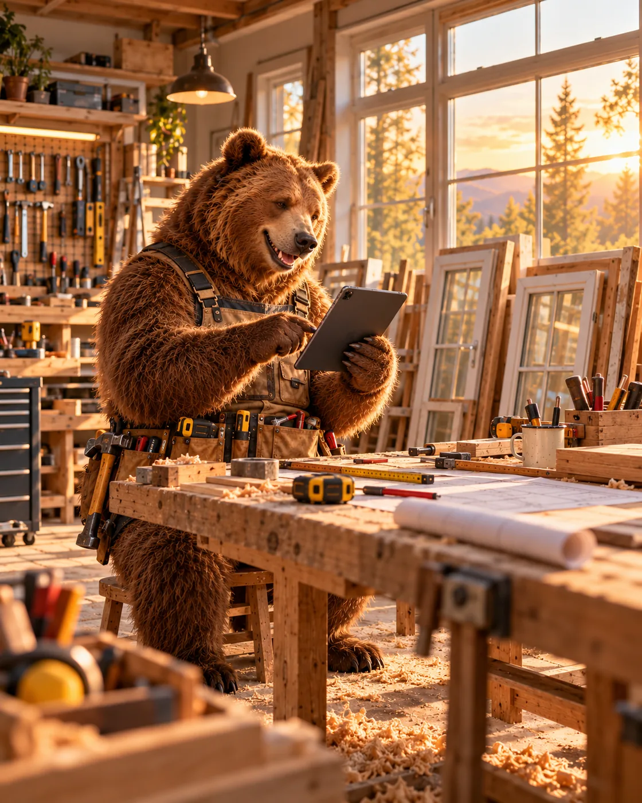

Teil 5 von 6 · Ergebnis
Aufmaß
kommt
sortiert.
Nach Positionen, mit Fotos und
Bestellmaß. Bereit fürs erste Angebot.

Teil 5 von 6 · Ergebnis
Nach Positionen, mit Fotos und
Bestellmaß. Bereit fürs erste Angebot.